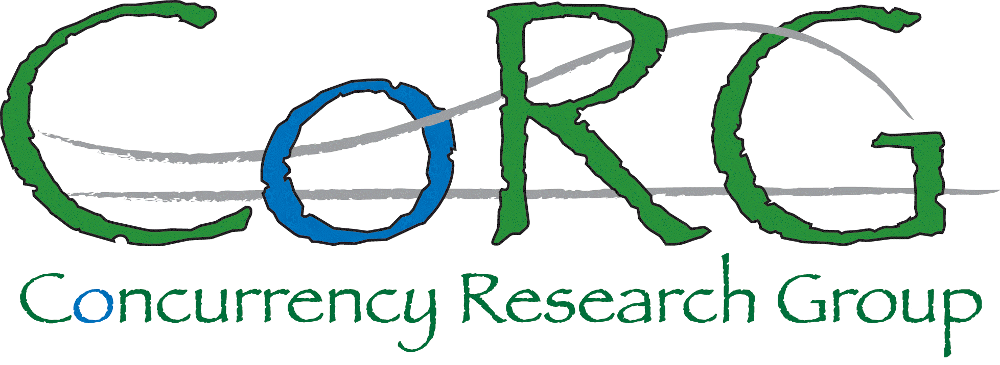

Overview
CoRG is a research group in the Information and Comptuter Sciences
Department at the University of
Hawai`i at Manoa. CoRG researchers develop novel simulation models,
algorithms, and systems for parallel and distributed computing platforms
and applications.
Publications
CoRG publications can
be found on
Prof.
Henri Casanova's Web site.
Current Members
Prof. Henri Casanova
Paul Soulier (Ph.D. candidate)
Noah Higa (B.S. student, Honors program)
Alumni
Alyssa Higuchi (M.S. 2016, project)
Robert Namaoe (M.S. 2016, project)
Michael Gowanlock (Ph.D. 2015)
Brian Hall (M.S. 2015, project)
Ben Karsin (M.S. 2012, thesis)
David Schanzenbach (M.S. 2011, thesis)
Mark Stillwell (Ph.D. 2010)
Kaveh Kardan (M.S. 2010, thesis)
Joshua Wingstrom (Ph.D. 2009)
Kayo Fujiwara (M.S. 2007, thesis)